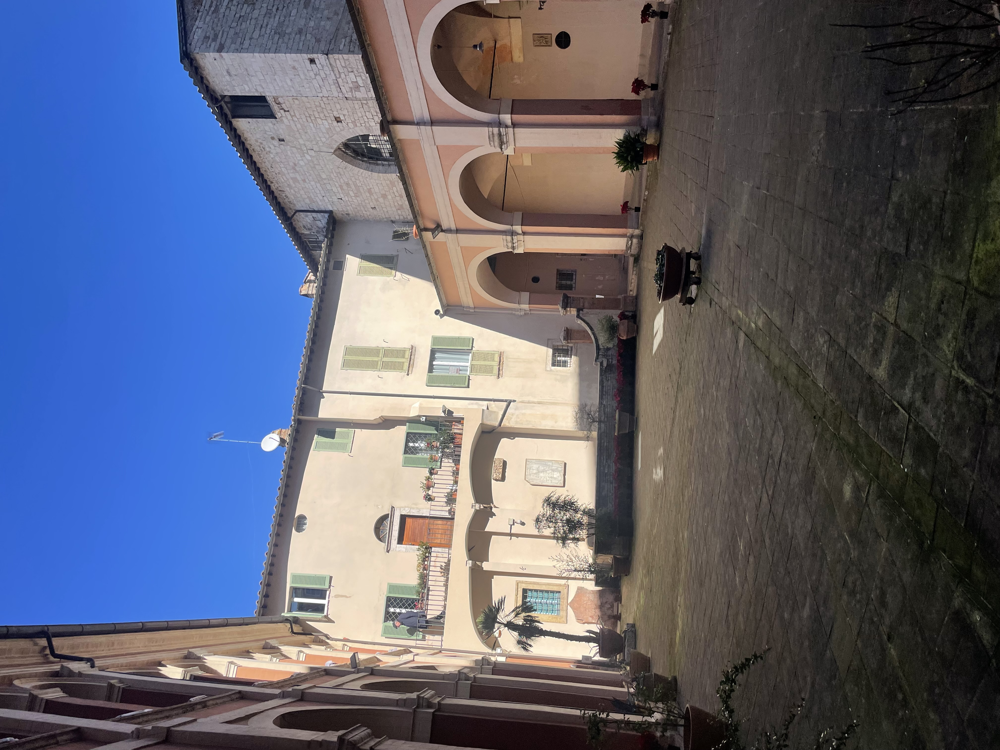
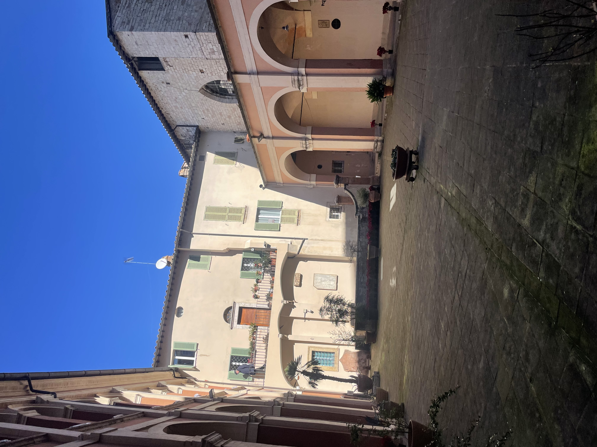

an undergraduate student researcher
and computer science student at
UT Austin
Research Projects
Texas Robotics: Living with Robots Lab
Dr. Justin Hart | May 2024 - Present
Investigating a novel, joint-based pose computer vision transformer to predict a human's body position and preemptively responding using a segway robot.
Lab HomepageTexas ECE: Socially Intelligent Machines Lab
Dr. Andrea L. Thomaz | Sep 2021 - May 2022
Explored a task allocation problem between a human and two autonomous agents that studies how fairness and efficiency impact a human's satisfaction.
Lab HomepageTexas Robotics: Living With Robots Lab
Dr. Justin Hart | Jan 2022 - May 2022
Instance Segmentation and Optical Character Recognition of Elevator Buttons. Designed a high-accuracy computer vision pipeline for robot elevator navigation with a team.
Lab HomepageEnergy Analytics: Freshman Research Initiative
Dr. Michael Pyrcz | Aug 2021 - Dec 2021
Programmed a generative adversarial network (GAN) to create new subsurface image data.
Program HomepageWork Experience
Tesla
Software Engineer (Co-op Employee) | Aug 2023 - Dec 2023
Worked on the Employee Mobility team on projects involving end-to-end encryption, reward statements, job changes, on high output team.
Tesla
Software Engineering Intern | May 2023 - Jul 2023
Worked on the Compensation team to develop backend logic and features for managing promotions, stock grants, and payroll, serving all Tesla employees.
Cox Automotive
Software Engineering Intern | May 2022 - Aug 2022
Designed package to centralize DynamoDB data models, setting the source of truth across backend APIs—used by companies we own (Autotrader & Kelly Blue Book, etc) & most major dealerships across America
iCode
Lead Technical Instructor | Jun 2021 - Aug 2021
As a programming instructor, I taught Unity, robotics, CAD 3D modeling, etc. I also trained new instructors.
Notable Projects
Spidey Routes
JavaScript / ArcGIS Pro API / Esri Maps
Built a “concrete jungle” map with a topographic feature overlay and elevation widget to visualize Spider-man's routes.
Project PagePantryEats
ReactJS | Puppeteer | MongoDB | Spoonacular API
User interface that crawls the web for recipes that match closely to the user’s inputted ingredients.
Project PageClub Connect
ReactJS | Node.js. | MongoDB
Web application that allows university students to create an account and find clubs that fit their interests.
Huffman Coding
Java | JFrame
Wrote Java program that manually performs lossless data compression based on each character’s frequency.
Travel

 
